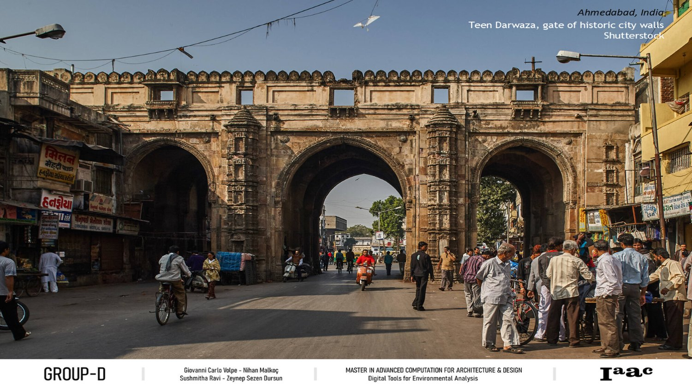
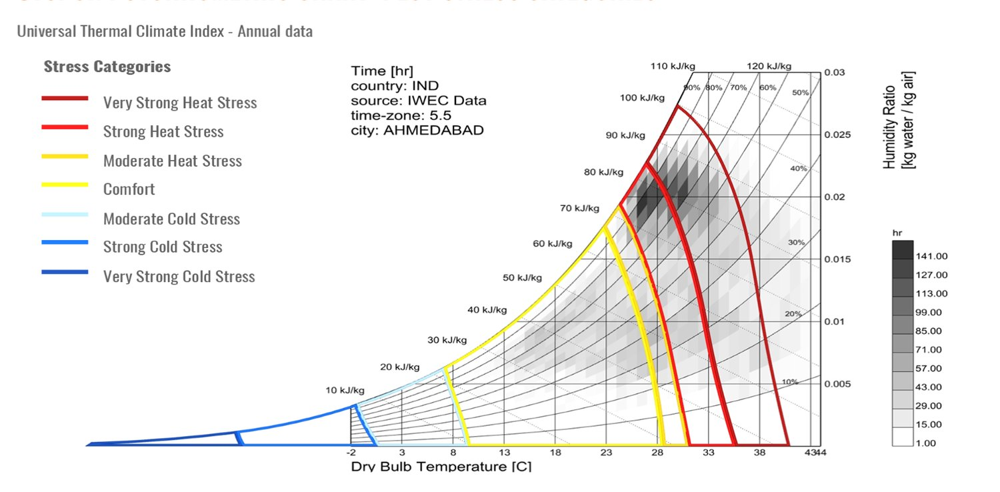
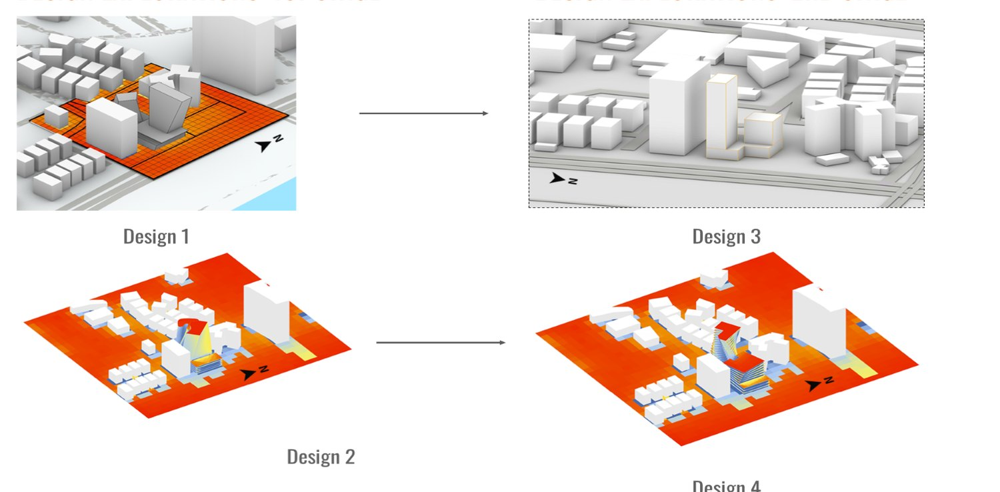
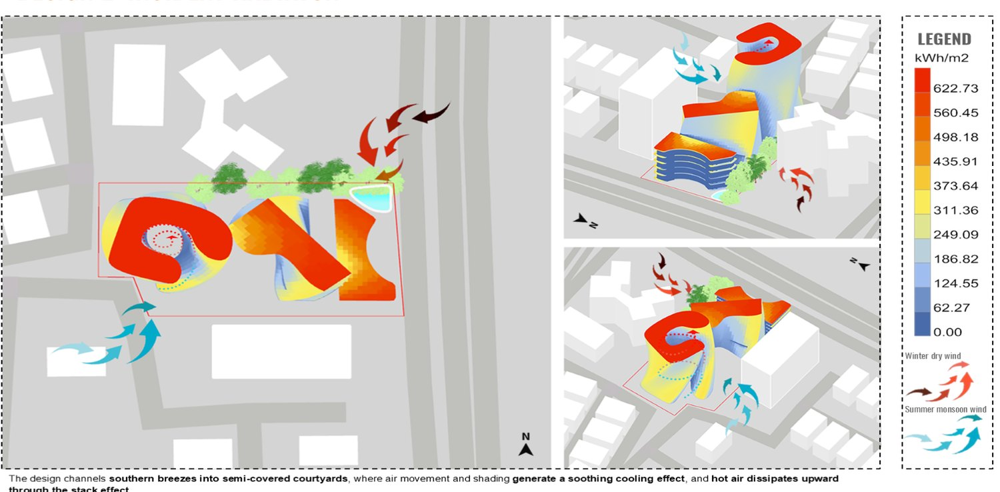
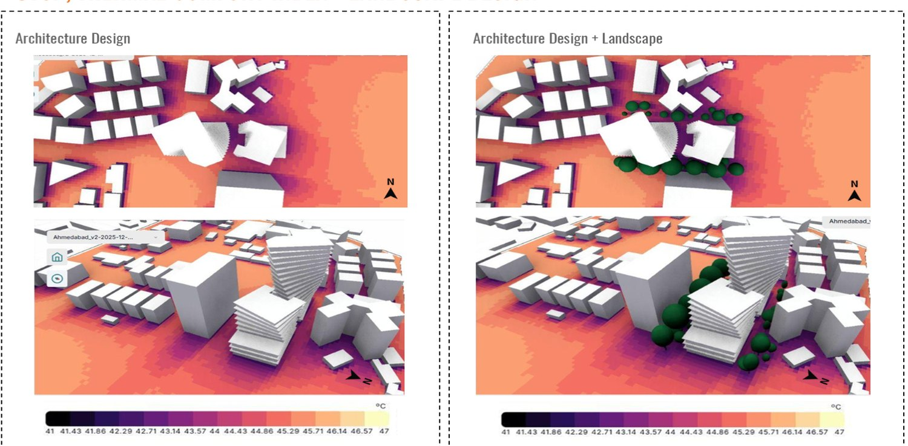

Ahmedabad
Digital Tools for Environmental AnalysisAhmedabad is one of India's hottest cities, extreme heat dominates March to June and low winds choke ventilation. For a mixed-use block on a 2,803 m² site we built a full climatic dashboard, then optimized four design cases for thermal comfort, tuning form, shading and façade to cut incident radiation and channel monsoon breezes into shaded courtyards.
-
Climatic dashboardtemperature, radiation, UTCI, wind
-
Comfort, not just formbreeze & shade drive the design
-
Optimizationfour cases, measured against KPIs
Team: Giovanni Carlo Volpe · Nihan Malkoç · Sushmitha Ravi · Zeynep Sezen Dursun

Reading the Climate
A dense, mixed-use plot in a city of ~8.1 million people. Before drawing anything, we built a full climatic dashboard from IWEC data, dry-bulb temperature, solar radiation, hourly UTCI, seasonal winds and the psychrometric chart. The verdict is blunt: extreme heat dominates March–June and low daytime winds choke ventilation, so the design has to earn its comfort through form, shading and orientation.

Four Design Cases
Four design cases were carried from massing to analysis, each testing a different way to lower radiation and lift airflow across the residential, commercial and office blocks.

Optimization for Comfort
Incident-radiation and airflow analyses drive the moves: southern breezes are channelled into shaded courtyards while hot air escapes through the stack effect. Moving, rotating and twisting the blocks and adding shading brought average incident radiation down from 183.95 to 152.51 kWh/m².

Comfort & Landscape
Finally, UTCI compares the architecture on its own against architecture plus landscape, showing how planting and ground treatment push the block further into the comfort zone.
